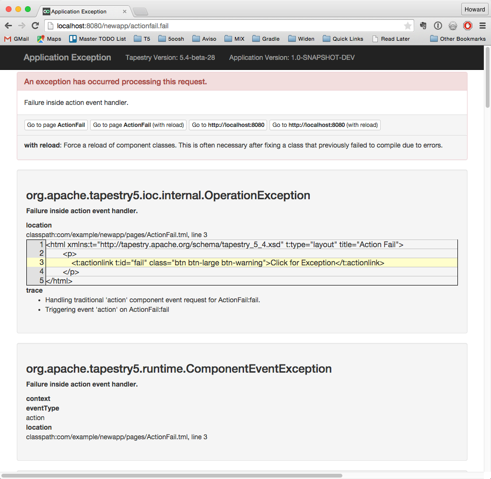
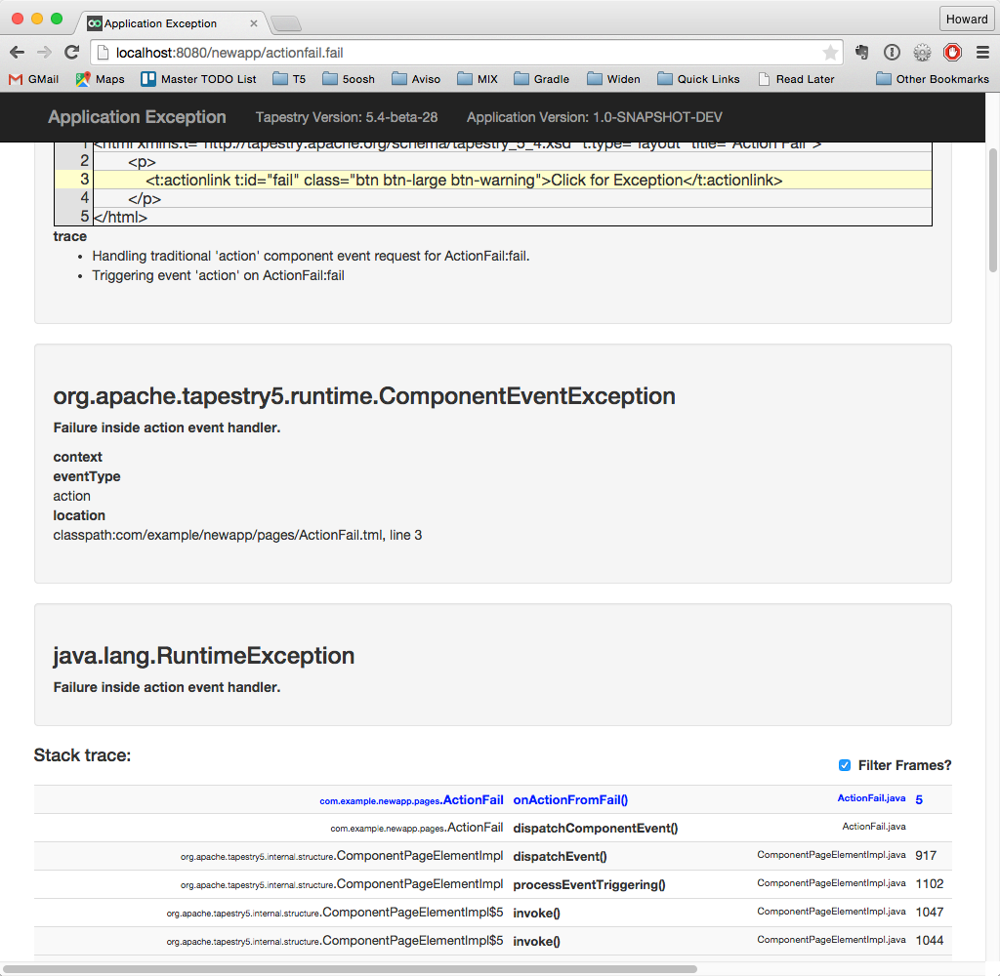
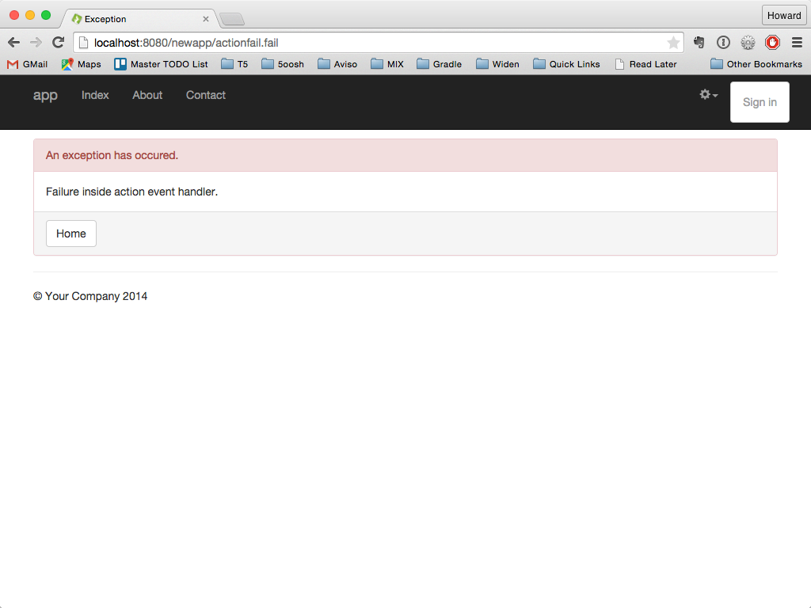
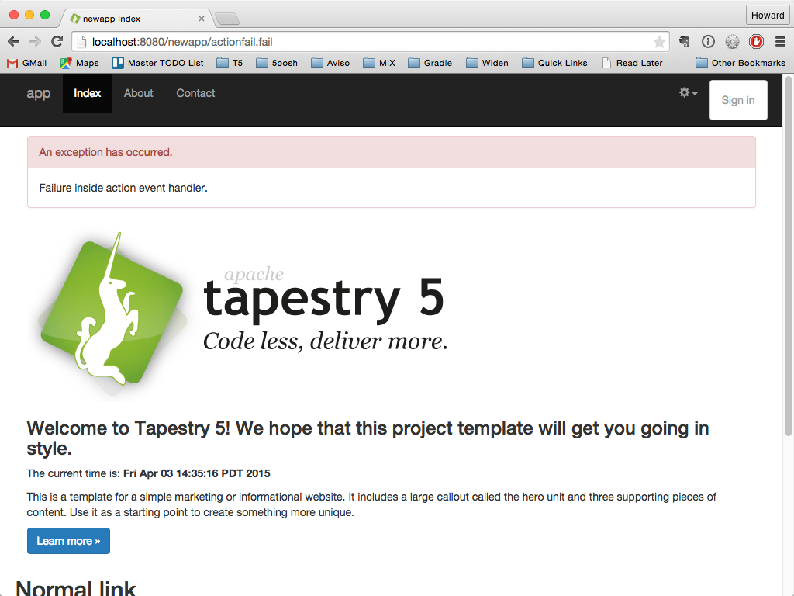

Overriding Exception Reporting
One of Tapestry’s best features is its comprehensive exception reporting. The level of detail is impressive and useful.
Of course, one of the first questions anyone asks is "How do I turn it off?" This exception reporting is very helpful for developers but its easy to see it as terrifying for potential users. Catching runtime exceptions can be a very useful way of handling rarely occurring exceptions even in production, and there’s no reason to throw away Tapestry’s default error reporting just to handle a few specific exceptions. You can contribute exception handles and/or exception pages for specific exception types. Refer back to Runtime Exceptions page for more information. Read on if you want to completely replace Tapestry’s default exception handling.
Version 1: Replacing the Exception Report Page
Let’s start with a page that fires an exception from an event handler method.
<html xmlns:t="http://tapestry.apache.org/schema/tapestry_5_4.xsd" t:type="layout" title="Action Fail">
<p>
<t:actionlink t:id="fail" class="btn btn-large btn-warning">Click for Exception</t:actionlink>
</p>
</html>package com.example.newapp.pages;
public class ActionFail {
void onActionFromFail() {
throw new RuntimeException("Failure inside action event handler.");
}
}With production mode disabled, clicking the link displays the default exception report page:


The easy way to override the exception report is to provide an ExceptionReport page that overrides the one provided with the framework.
This is as easy as providing a page named ExceptionReport.
It must implement the ExceptionReporter interface.
<html t:type="layout" title="Exception"
xmlns:t="http://tapestry.apache.org/schema/tapestry_5_4.xsd">
<div class="panel panel-danger">
<div class="panel-heading">An exception has occurred.</div>
<div class="panel-body">
${message}
</div>
<div class="panel-footer">
<t:pagelink page="index" class="btn btn-default">Home</t:pagelink>
</div>
</div>
</html>package com.example.newapp.pages;
import org.apache.tapestry5.annotations.Property;
import org.apache.tapestry5.services.ExceptionReporter;
public class ExceptionReport implements ExceptionReporter {
@Property
private String message;
@Override
public void reportException(Throwable exception) {
message = exception.getMessage();
if (message == null)
message = exception.getClass().getName();
}
}The end result is a customized exception report page.

Version 2: Overriding the RequestExceptionHandler
The previous example will display a link back to the Index page of the application.
Another alternative is to display the error on the Index page.
This requires a different approach: overriding the service responsible for reporting request exceptions.
The RequestExceptionHandler service is responsible for this.
By replacing the default implementation of this service with our own implementation, we can take control over exactly what happens when a request exception occurs.
We’ll do this in two steps.
First, we’ll extend the Index page to serve as an ExceptionReporter.
Second, we’ll override the default RequestExceptionHandler to use the Index page instead of the ExceptionReport page.
Of course, this is just one approach.
<t:if test="message">
<div class="panel panel-danger">
<div class="panel-heading">An exception has occurred.</div>
<div class="panel-body">
${message}
</div>
</div>
</t:if>public class Index implements ExceptionReporter
{
@Property
@Persist(PersistenceConstants.FLASH)
private String message;
public void reportException(Throwable exception)
{
message = exception.getMessage();
if (message == null) {
message = exception.getClass().getName();
}
}
// ...
}The above defines a new property, message, on the Index page.
The @Persist annotation indicates that values assigned to the field will persist from one request to another.
The use of PersistenceConstants.FLASH for the persistence strategy indicates that the value will be used until the next time the page renders, then the value will be discarded.
The message property is set from the thrown runtime exception.
The remaining changes take place inside AppModule.
public RequestExceptionHandler buildAppRequestExceptionHandler(
final Logger logger,
final ResponseRenderer renderer,
final ComponentSource componentSource)
{
return new RequestExceptionHandler()
{
public void handleRequestException(Throwable exception) throws IOException
{
logger.error("Unexpected runtime exception: " + exception.getMessage(), exception);
ExceptionReporter index = (ExceptionReporter) componentSource.getPage("Index");
index.reportException(exception);
renderer.renderPageMarkupResponse("Index");
}
};
}
public void contributeServiceOverride(
MappedConfiguration<Class, Object> configuration,
@Local
RequestExceptionHandler handler)
{
configuration.add(RequestExceptionHandler.class, handler);
}First we define the new service using a service builder method.
This is an alternative to the bind() method.
We define the service, its interface type (the return type of the method) and the service id (the part that follows build is the method name) and provide the implementation inline.
A service builder method must return the service implementation, here implemented as an inner class.
The Logger resource that is passed into the builder method is the Logger appropriate for the service.
ResponseRenderer and ComponentSource are two services defined by Tapestry.
With this in place, there are now two different services that implement the RequestExceptionHandler:
the default one built into Tapestry (whose service id is RequestExceptionHandler) and the new one defined in this module, AppRequestExceptionHandler.
Without a little more work, Tapestry will be unable to determine which one to use when an exception does occur.
Tapestry has a pipeline for resolving injected dependencies; the ServiceOverride service is one part of that pipeline.
Contributions to it are used to override an existing service, when the injection is exclusively by type.
Here we inject the AppRequestExceptionHandler service and contribute it as the override for type RequestExceptionHandler.
The @Local annotation is used to select the RequestHandler service defined by this module, AppModule.
Once contributed into ServiceOverride, it becomes the default service injected throughout the Registry.
This finally brings us to the point where we can see the result:

Version 3: Decorating the RequestExceptionHandler
A third option is available: we don’t define a new service, but instead decorate the existing RequestExceptionHandler service.
This approach means we don’t have to make a contribution to the ServiceOverride service.
Service decoration is a powerful facility of Tapestry that is generally used to "wrap" an existing service with an interceptor that provides new functionality such as logging, security, transaction management or other cross-cutting concerns. The interceptor is an object that implements the same interface as the service being decorated, and usually delegates method invocations to it.
However, there’s no requirement that an interceptor for a service actually invoke methods on the service; here we contribute a new implementation that replaces the original:
public RequestExceptionHandler decorateRequestExceptionHandler(
final Logger logger,
final ResponseRenderer renderer,
final ComponentSource componentSource,
@Symbol(SymbolConstants.PRODUCTION_MODE)
boolean productionMode,
Object service)
{
if (!productionMode) return null;
return new RequestExceptionHandler()
{
public void handleRequestException(Throwable exception) throws IOException
{
logger.error("Unexpected runtime exception: " + exception.getMessage(), exception);
ExceptionReporter index = (ExceptionReporter) componentSource.getPage("Index");
index.reportException(exception);
renderer.renderPageMarkupResponse("Index");
}
};
}As with service builder methods and service configuration method, decorator methods are recognized by the decorate prefix on the method name.
As used here, the rest of the method name is used to identify the service to be decorated (there are other options that allow a decorator to be applied to many different services).
A change in this version is that when in development mode (that is, when not in production mode) we use the normal implementation.
Returning null from a service decoration method indicates that the decorator chooses not to decorate.
The Logger injected here is the Logger for the service being decorated, the default RequestExceptionHandler service.
Otherwise, we return an interceptor whose implementation is the same as the new service in version #2.
The end result is that in development mode we get the full exception report, and in production mode we get an abbreviated message on the application’s Index page.